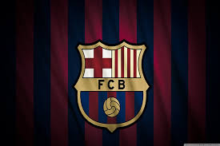

FC Barcelona
Winners of Laliga 2017-18 and Copa del-rey

It is a bowl-shaped design, in which the two upper quarters maintain the St George Cross and the red and yellow bars of the original, which are the most representative symbols of Barcelona and Catalonia.
LogoAll the info about FC Barcelona next football games. Check out for available tickets, how to buy, group tickets, accesibility and much more.Buy here both Home and away game matches.
Buy Home Tickets1 Ter Stegen Goalkeeper. 2 Semedo Defender. 3 Piqué Defender. 4 I.Rakitic Midfielder. 5 Busquets Midfielder. 6 Denis Suárez Midfielder. 8 A. Iniesta Midfielder. 9 Luis Suárez Forward. 10 Messi Forward
Players Profiles
Born and raised in central Argentina, Messi was diagnosed with a growth hormone deficiency as a child. At age 13, he relocated to Spain to join Barcelona, who agreed to pay for his medical treatment. After a fast progression through Barcelona's youth academy, Messi made his competitive debut aged 17 in October 2004. Despite being injury-prone during his early career, he established himself as an integral player for the club within the next three years, finishing 2007 as a finalist for both the Ballon d'Or and FIFA World Player of the Year award, a feat he repeated the following year
Iniesta came through La Masia, the Barcelona youth academy, after an early emigration from his birthplace, and impressed from an early age. He made his first-team debut aged 18 in 2002. He began playing regularly during the 2004–05 season and has remained in the team ever since. Iniesta was an integral part of the Barcelona sides that won two historic trebles in 2009 and 2015, and his 34 trophies make him the most decorated Spanish footballer of all time.
Xavi won the U-20 World Cup for Spain in 1999, and the Olympic Silver Medal at the 2000 Olympics. Since making his senior team debut in 2000, he has been capped 133 times for the Spain national team, and has been seen as an influential figure in the team's tremendous success. He played an integral role in Spain's victory at the 2010 World Cup, as well as their successes at both Euro 2008 and Euro 2012. He had a 91% passing success rate at the 2010 World Cup and was named in the World Cup All-Star Team.[6] He was named Player of the Tournament by UEFA at Euro 2008.[10] He was also named in the UEFA Euro Team of the Tournament in 2008 as well as 2012. After the 2014 World Cup, Xavi announced his retirement from international football.